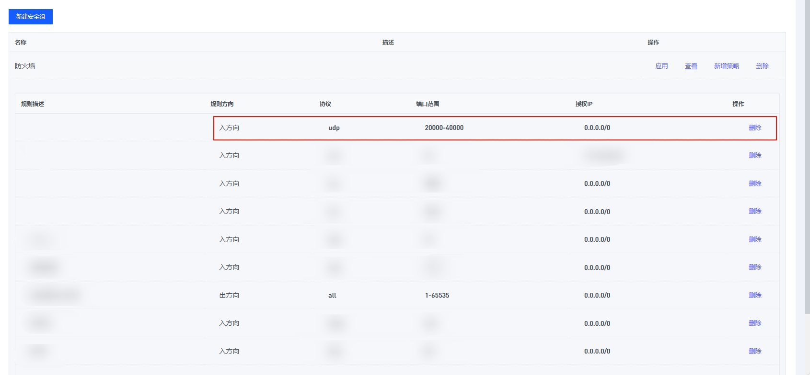
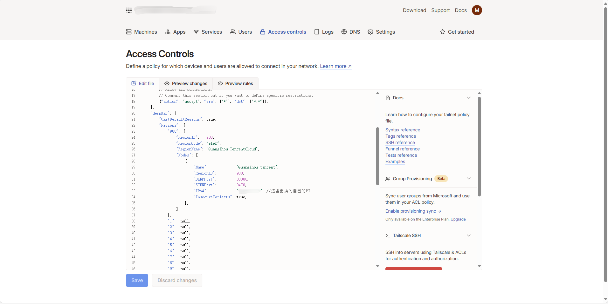

H264 / WebRTC
Introduction To H.264¶
H.264, also known as MPEG-4 AVC (Advanced Video Coding), is a widely used video compression standard, particularly suited for applications that require high compression ratios, such as internet streaming and Blu-ray disc videos.
Compared to MJPEG video, H.264 has the advantages of full audio support and lower bitrate, allowing it to operate with lower bandwidth. However, since the official H.264 video functionality of PiKVM is only compatible with the Raspberry Pi GPU, using H.264 on other devices currently does not support hardware encoding (for example, on OneCloud devices, the Armbian system does not have available VPU drivers).
Below are two solutions for H.264 video in the One-KVM project: libx264 and ffmpeg.
Libx264
Libx264 is an open-source library used for encoding H.264 video, developed by VideoLAN and other contributors. It is widely used in many video processing software due to its efficient encoding quality and speed.
The author has integrated it with 'ustreamer', enabling this feature by default in the Docker container version. Compared to the later 'ffmpeg' solution, it offers better performance and is more user-friendly. This 'ustreamer' branch can be found at https://github.com/mofeng-git/ustreamer.
H.264/WebRTC web video may require additional mapping of UDP ports 20000-40000.
Ffmpeg
This Method is Deprecated. This is for archival use only
This feature was designed by a community member and uses ffmpeg for software encoding. However, due to relying on CPU software encoding, its performance on OneCloud devices is poor.
Usage
This functionality is pre-installed in the integration package One-KVM_Armbian_by-SilentWind_for-Onecloud_24.6.18. It is not included in earlier versions (manual installation instructions are available at the end of this guide if needed). Since the OneCloud CPU has limited performance, the kvmd-ffmpeg service is disabled by default (as shown on the web interface) to avoid affecting the smooth operation of other services.

If needed, the service can be manually enabled by executing the following command.
# start the kvmd-ffmpeg service
sudo systemctl start kvmd-ffmpeg
# enable the kvmd-ffmpeg service to start at Boot
sudo systemctl enable kvmd-ffmpeg
On OneCloud devices, H.264 video experiences significant lag, resulting in a poor user experience.

Installation
# This feature is not installed by default, needs to be enabled by running the script kvmd_h264_install.sh
git clone --branch 9b97e01b340484fb1c75916531b2c63aea3e8046 https://github.com/mofeng-git/One-KVM.git
cd One-KVM
sudo bash kvmd_h264_install.sh
# Terminate the kvmd-ffmpeg service
sudo systemctl stop kvmd-ffmpeg
sudo systemctl disable kvmd-ffmpeg
H.264/WebRTC¶
MJPEG video streaming uses the same HTTP connection as web access. In contrast, WebRTC employs a completely different video transmission method, relying on P2P connections and UDP to transmit data. This approach can reduce network load and latency but increases the complexity of configuration.
To address this, One-KVM checks which network interface serves as the default gateway and attempts to discover the external address using a Google STUN server. This is necessary when using Tailscale or connecting to One-KVM from the external internet. If you prefer not to use Google (set as the default for reliability), you can choose an alternative STUN server or configure your own STUN server.
The default configuration in /etc/kvmd/override.yaml is as follows:
janus:
stun:
host: stun.l.google.com
port: 19302
retries: 5
retries_delay: 5.0
timeout: 5.0
For remote access, you can choose either port forwarding or remote networking. We recommend the remote networking.
Port Forwarding
In this method, UDP ports 20000-40000 are mapped in the firewall for WebRTC functionality. The demonstration site uses this approach.
However, this method has significant limitations due to the need to map a large number of ports.

Remote Networking
Using Tailscale as an example for remote networking, first, install the client: Download · Tailscale. You can directly install Tailscale on the One-KVM host with the following command.
curl -fsSL https://tailscale.com/install.sh | sh
# Logging in the same Tailscale account
tailscale up
# Some Utility Commands
# View the List of Virtual LAN Device
tailscale status
# View Network Status and Relay Server Status
tailscale netcheck
# View the Current Device's Virtual LAN IP
tailscale ip
Next, set up networking across multiple devices. Below is an example.
Then, use the virtual LAN IP to access and utilize One-KVM's H.264/WebRTC functionality.

Since Tailscale's official relay servers are located overseas, network connectivity may be poor. It is recommended to use a self-hosted relay server. You can refer to this article: Self-Hosting a Tailscale Relay Server | Anubis's Blog.

Video Demonstration¶
If you find the H.264 video quality unsatisfactory, try increasing the H.264 bitrate through the system menu in the top-right corner of the web interface.